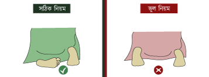
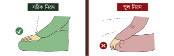
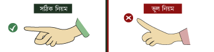
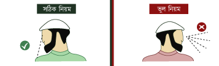

নামাজে বৈঠকের নিয়ম
নামাজে দ্বিতীয় রাকাতের পরে এবং শেষ রাকাতে বৈঠক করতে হয়। দ্বিতীয় রাকাতের পরে বৈঠকে শুধু তাশাহুদ পাঠ করতে হয়। অপরদিকে শেষ বৈঠকে তাশাহুদ, দরূদ শরীফ ও দোয়া মাসূরা পাঠ করতে হয়।
বৈঠকের সময় বাম পা মাটিতে বিছিয়ে তার উপরে বসবে। ডান পা খাড়া করে রাখবে। ডান পায়ের আঙুল মুড়িয়ে কিবলামুখী করে রাখবে।

উভয় হাত দুই রানের উপরে হাঁটুর সামনে রাখবে। হাতের আঙুল সামনের দিকে ঝুলিয়ে দিবে না, বরং হাঁটুর বরাবরে ভিতরেই রাখবে।

তাশাহুদ পাঠ করার সময়ে "আশহাদু আল্লা-ইলাহা ইল্লাল্লাহু" বলার সময়ে ডান হাতের তর্জনী দিয়ে ইশারা করতে হবে। "আশহাদু" বলার সময়ে ডান হাতের বৃদ্ধাঙ্গুলি ও মধ্যম আঙুলের মাথা একত্র করে চিত্রের ন্যায় গোল করতে হবে।
"লা ইলাহা" বলার সময় সময় তর্জনি উঁচু করে ইশারা করতে হবে। তর্জনী এই পরিমাণ উঁচু করবে যেন তার অগ্রভাগ কিবলামুখি হয়। এর অধিক উঁচু করা অনুচিত।

"ইল্লাল্লাহু" বলতে বলতে তর্জনী নামিয়ে ফেলবে। তবে ডান হাতের আঙুলগুলোকে আর সোজা না করে বৈঠকের বাকী সময় গুটিয়ে রাখবে।
নামাজের শেষ বৈঠক তাশাহুদ, দরূদ ও দোয়া মাসুরা পড়ে সবশেষে সালাম ফিরানোর মাধ্যমে সমাপ্ত করবে। প্রথমে ডান দিকে ও পরে বাম দিকে সালাম ফিরাবে। মাথা এতোটুকু ঘুরাবে যারে পিছনের কাতারের ব্যক্তি চোয়াল দেখতে পায়। সালাম ফেরানোর সময় নিজের কাঁধের উপরে নজর সীমাবদ্ধ রাখবে।
